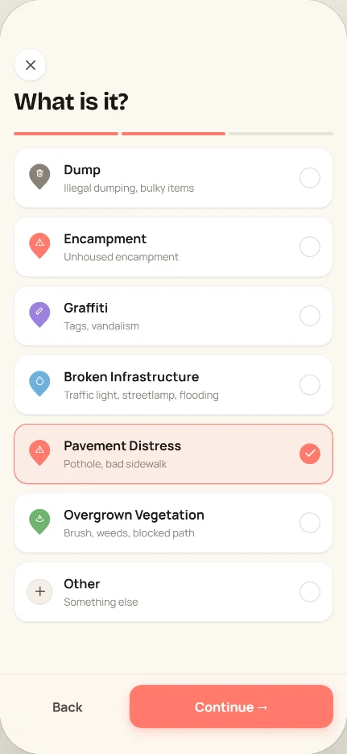

Program
Civfix
Our resident reporting and volunteer hub. See a problem, like illegal dumping, graffiti, a pothole or a broken streetlight? Drop a pin and add a photo. Civfix works out which agency is responsible and forwards your report.
The same map shows neighborhood cleanups you can join or host.